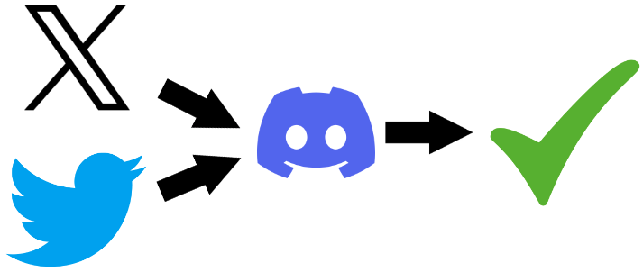
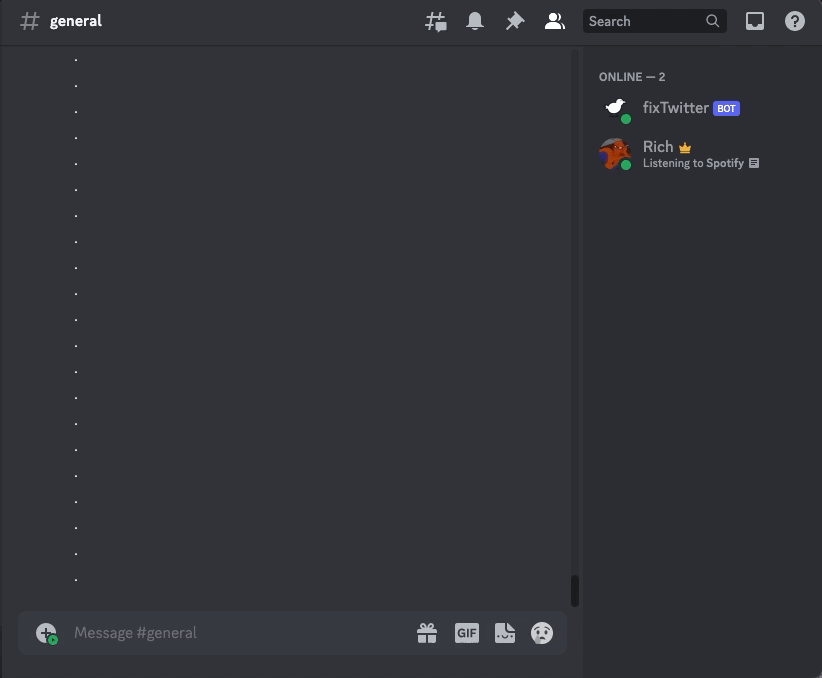

fixTwitter Discord Bot Development

Background
As I’m sure we’re all aware by now, a certain someone purchased the social media application, Twitter, for an ungodly amount of money some time ago and rebranded it as X. Whatever your thoughts on the matter, a side effect of the changes to the internals of X became an incompatibility with another beloved social app: Discord.
During the Twitter era, simply posting a link to a tweet would render it for users to see without needing to go to Twitter itself to see it. These days, links no longer render and just stay as… well, links. One workaround is to edit the link from “twitter.com” or “x.com” to “fxtwitter.com” or “fixupx.com,” thanks to the wonderful maintainers of FixTweet.
Statement of Need
While FixTweet provides us with the solution for rendering/embedding, it’s not exactly the most convenient for all use cases. My bot, fixTwitter seeks to make this ever so slightly more convenient.
It can be a pain to input the hyperlink fix in the middle of a link, especially when on a mobile device. What typically winds up happening is a user pastes the link, drags the cursor to the right spot, then edits to the FixTweet destination. Usually, the mobile device will auto-space what the edit is and if the user doesn’t notice in time the link will be broken… making them have to edit it all over again.
The Solution
Instead, fixTwitter lets users specify a prepender that will prompt the bot. For my personal servers, I chose ??. All this means is a user should enter ?? and then they can paste as normal. The bot is smart enough to convert to the appropriate Twitter/X hyperlink regardless of which the user supplies. On the backend, the bot deletes the original post and instead returns its own with the fixed link and an authorship tag for who posted it.
I’m Sold, Let’s See it in Action!
No problem, below is a GIF showing how to use fixTwitter to auto-convert a tweet from yours truly to a proper format for rendering in Discord:

How Do I Get My Own fixTwitter Bot?
Great question! fixTwitter is free to clone via GitHub. the README walks through how to set up Discord to listen to the bot and grant it access to desired servers.
Hosting
While the repo is free to clone, it is up to the user to determine how to host the bot. For my personal use, this was a great opportunity to take advantage of a Raspberry Pi I had lying around. For simple servers with my friends, this is good enough to handle the traffic it gets.
Note: One huge downside is when my cat kicks the pi and the bot is forced offline.
Other Features
While fixTwitter can be extended to do whatever you want, at the moment it only comes with a few features, shown below using ??help from the bot itself:
fixTwitter is a simple Discord bot that fixes twitter.com and x.com links to fixup.com. To use it, simply type ?? followed by your message. If your message contains a twitter.com or x.com link, it will be replaced with a fixup.com link. For example, ??https://twitter.com will be replaced with https://fixup.com. The bot will remove the original post, but replace it with a message of it's own and credit to the OP's username.
fixTwitter will also respond to:
- ??hello: A greeting
- ??ping: Check fixTwitter's latency or response time to the server
- ??roll: A random number between 1 and 6Additionally, if fixTwitter doesn’t recognize the prompt command it will alert the user that the prompt isn’t recognized.